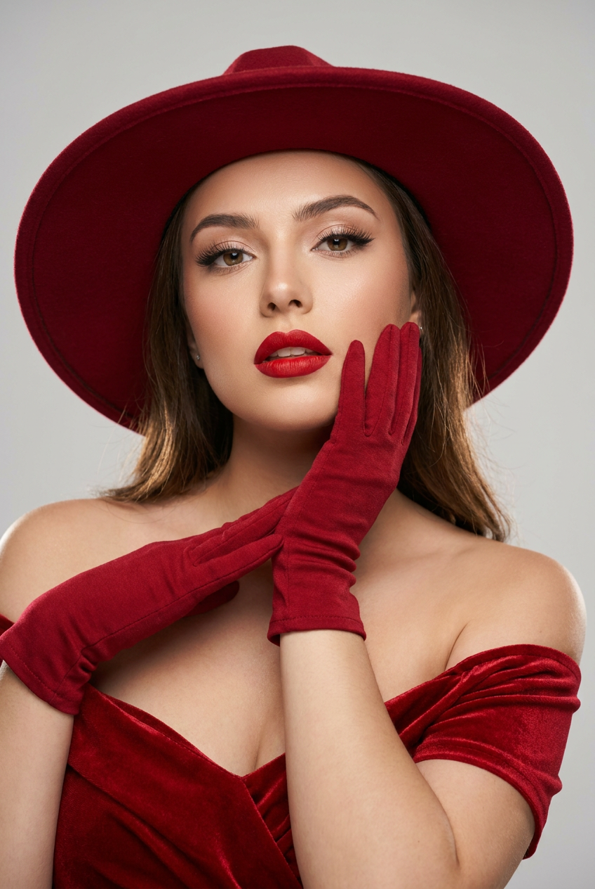
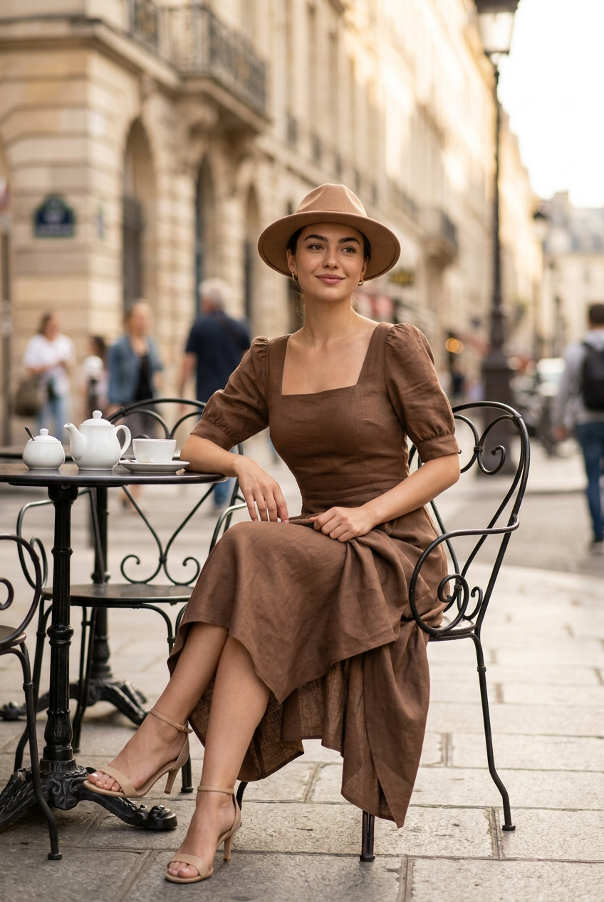
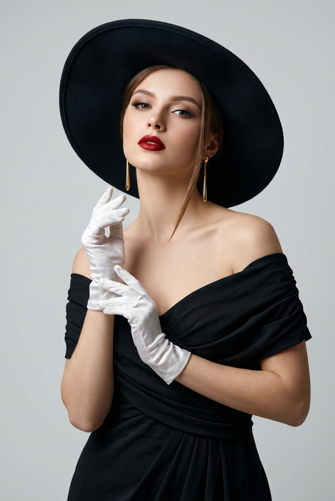
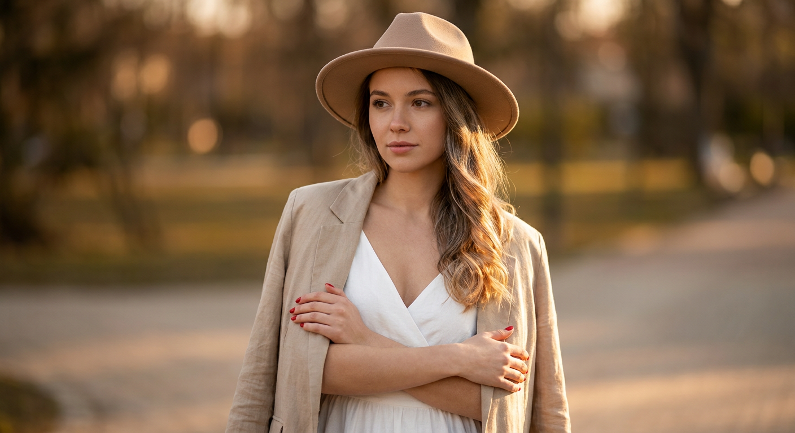
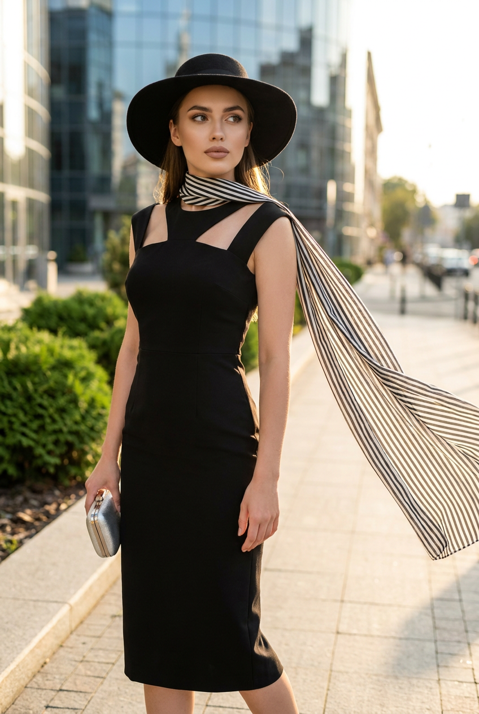
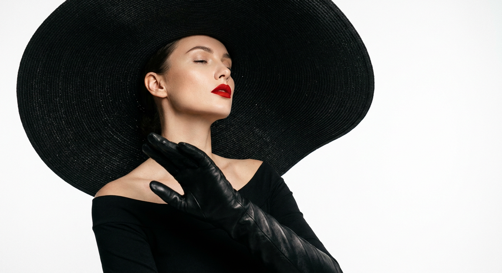
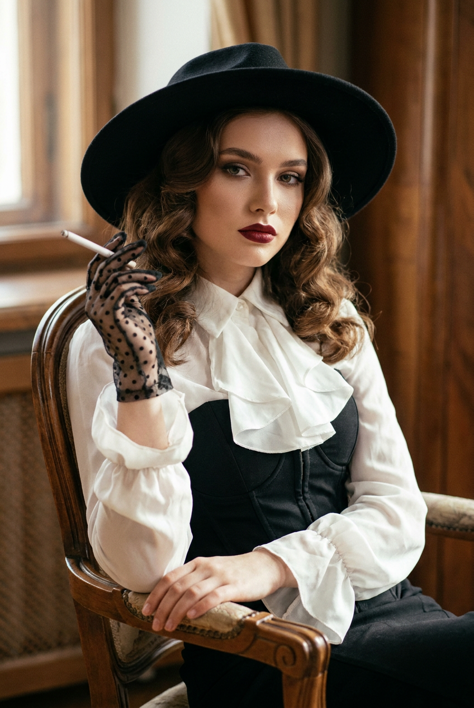
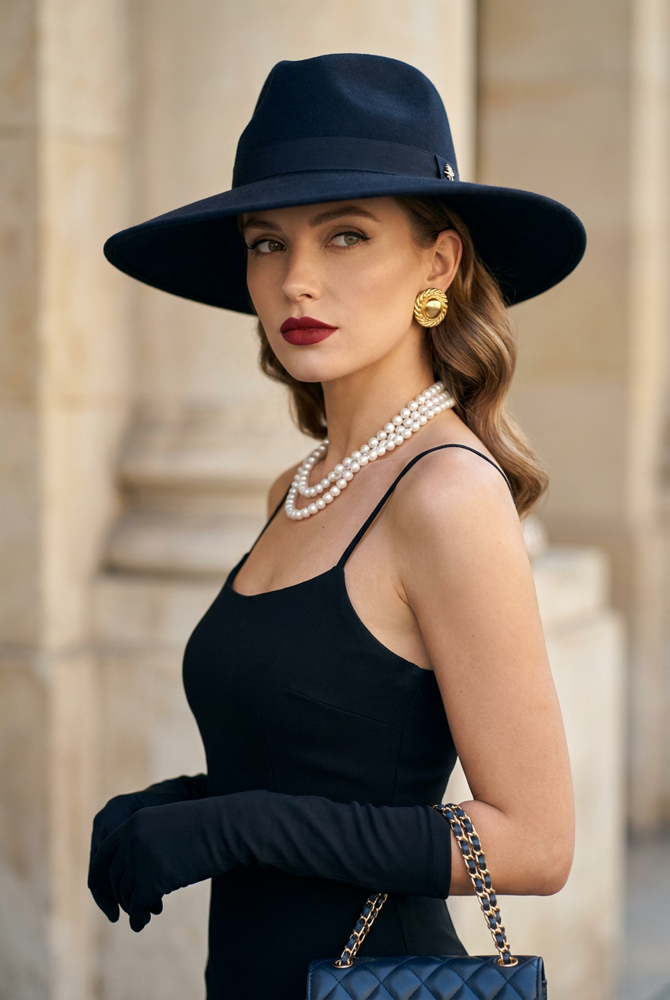
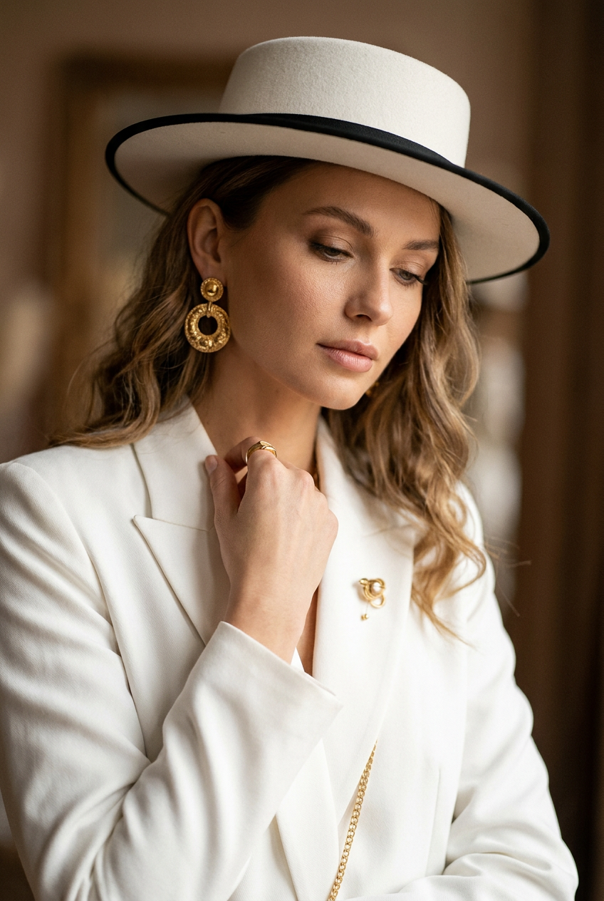
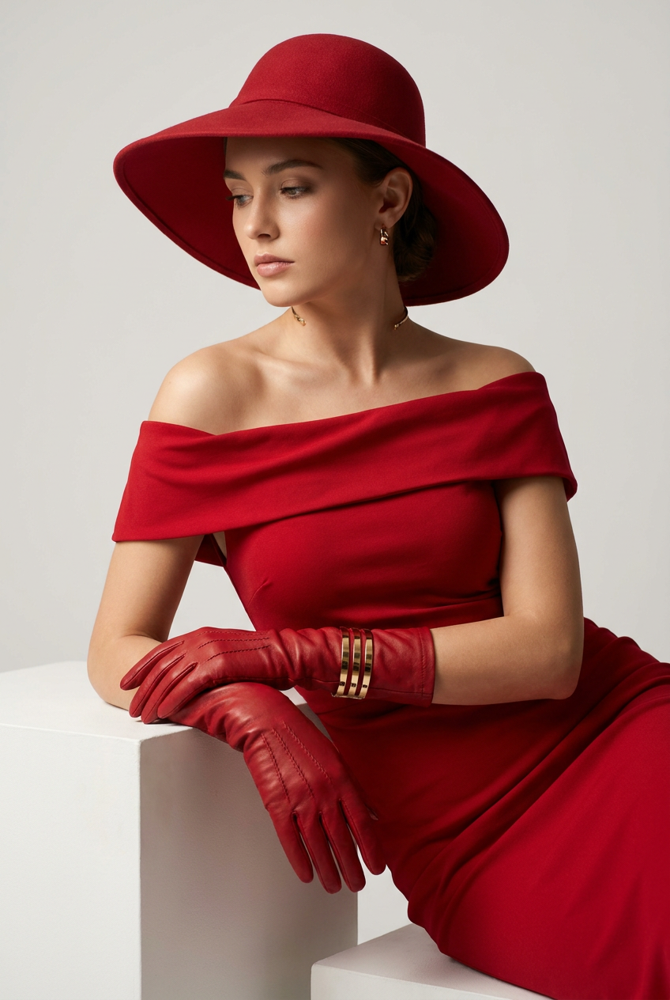

ИИ-фото в шляпе: 10 промптов для нейросети

Шляпа легко превращает обычный портрет в журнальный кадр, но нейросеть часто меняет черты лица, путает фактуру ткани и рисует лишние пальцы. Готовые промпты помогают заранее задать позу, свет, одежду и настроение снимка.
В подборке — десять сценариев для ИИ-фото в шляпе: студийный glamour, парижское кафе, ретро 1940–1960-х, прогулка в саду, строгий street fashion и несколько образов в стиле old money. Подставьте свой референс и при необходимости уточните формат кадра.
Как сгенерировать такое фото: пошагово
Нужен снимок анфас при ровном свете, лицо в кадре целиком, без тёмных очков и головных уборов. Разрешение от 1000 пикселей по короткой стороне. Чем чётче исходник, тем точнее модель повторит черты.
Выберите сценарий ниже и нажмите «Копировать» — текст уйдёт в буфер целиком, вместе с командой сохранения внешности. Эта команда стоит первой строкой и отвечает за то, чтобы на выходе было ваше лицо, а не случайное.
Кнопка «Сгенерировать» рядом с каждым промптом открывает модель в новой вкладке. Nano Banana Pro работает с референсом лица — в отличие от моделей, которые генерируют портрет с нуля и узнаваемость теряют.
Промпт — в поле ввода, портрет — через загрузку референса. Порядок значения не имеет, но без референса команда сохранения внешности работать не будет: модели нечего сохранять.
Для сторис и ленты берите 9:16, для превью и обложек — 4:3. Первый результат редко идеален: если поза или свет ушли не туда, поправьте соответствующую часть промпта и запустите заново. Обычно хватает двух-трёх итераций.
10 промптов для генерации
1. Красный студийный гламур
Строго сохранить внешность по загруженному референсу: черты лица, пропорции, мимику и текстуру кожи без изменений. Фотореалистичный крупный студийный портрет молодой женщины, вертикальный кадр, акцент на лице, шляпе и перчатках. Лицо модели — по загруженному референсу: точно передать форму глаз, бровей, носа, губ, овал, пропорции и естественную мимику, не менять внешность. На женщине широкополая красная шляпа с мягкими полями, красный наряд с открытыми плечами из лёгкой драпированной или бархатистой ткани и красные перчатки до запястья. Одна рука поднята к лицу, пальцы слегка согнуты, указательный палец находится возле щеки; вторая рука мягко поддерживает композицию. Красная помада, выразительные стрелки, объёмные ресницы, ровная кожа с лёгким сиянием на скулах. Контурный студийный свет подчёркивает волосы и руки, фон чистый и ненавязчивый, настроение уверенное и слегка загадочное.
2. Парижское кафе на улице

Строго сохранить внешность по загруженному референсу: черты лица, пропорции, мимику и текстуру кожи без изменений. Фотореалистичный fashion-street editorial в духе Paris café look, вертикальная портретная композиция, молодая женщина в полный рост сидит на кованом стуле у небольшого столика на городской улице. Лицо — по загруженному референсу, сохранить индивидуальные черты, пропорции и естественную мимику без изменения внешности. Корпус развёрнут на три четверти, одна рука лежит на краю стола, другая касается складок платья. Ноги согнуты и слегка разведены, одна ступня вынесена вперёд. Взгляд направлен мимо камеры, на лице спокойная уверенная улыбка. На голове небольшая мягкая фетровая шляпа песочно-коричневого шоколадного оттенка с низкой тульей и аккуратными полями. Одежда элегантная, в коричневой гамме; добавьте детали уютного кафе, естественный городской свет, реалистичные фактуры металла, ткани и каменной улицы.
3. Чёрный портрет с перчатками

Строго сохранить внешность по загруженному референсу: черты лица, пропорции, мимику и текстуру кожи без изменений. Фотореалистичный студийный fashion-портрет молодой женщины в эстетике beauty editorial, вертикальный кадр на нейтральном светлом фоне. Модель стоит в три четверти, подбородок слегка поднят, взгляд направлен прямо в объектив или немного выше него; выражение лица уверенное, гламурное. Лицо взять с загруженного референса и точно сохранить форму глаз, бровей, носа, губ, овал, пропорции и естественную мимику. На голове большая матовая чёрная фетровая шляпа с широкими мягкими полями. Чёрное полуприлегающее платье с открытыми плечами, плотная ткань собрана красивыми драпировками у плеч и талии. Белые гладкие сатиновые или кожаные перчатки доходят до запястья либо немного выше. Дополнить образ длинными золотистыми серьгами-каплями или серьгами-люстрами. Контрастный мягкий студийный свет, высокая детализация кожи, премиальная журнальная съёмка.
4. Садовый образ в бежевых тонах

Строго сохранить внешность по загруженному референсу: черты лица, пропорции, мимику и текстуру кожи без изменений. Фотореалистичный lifestyle-портрет молодой женщины в парке или саду, мягкий дневной свет, спокойный брендовый fashion-стиль. Модель стоит в полоборота и смотрит в сторону, выражение лица естественное, сдержанное и уверенное. Использовать лицо с загруженного референса, точно передать глаза, брови, нос, губы, овал, пропорции и мимику, не менять внешность. На женщине светлая бежевая федора с полями, матовая песочная фактура, аккуратная посадка, край слегка обрамляет лоб. Белое платье или сарафан из лёгкой ткани, без заметного узора, с круглым или V-образным вырезом и аккуратной посадкой по фигуре. Сверху небрежно накинут свободный бежево-песочный жакет с реалистичной фактурой, видимыми пуговицами и манжетами. На шее тонкая цепочка. Добавить мягкое зелёное боке, натуральные тени, спокойную палитру и ощущение качественной уличной фотосессии.
5. Чёрное платье и летящий шарф

Строго сохранить внешность по загруженному референсу: черты лица, пропорции, мимику и текстуру кожи без изменений. Фотореалистичный fashion editorial, молодая женщина в полный рост у современного здания, вертикальный кадр с выразительной архитектурой и лёгким ветром. Лицо модели — по загруженному референсу: сохранить индивидуальные черты, форму глаз, бровей, носа, губ, овал и естественную мимику без изменения внешности. На ней строгое чёрное приталенное платье миди без рукавов, с аккуратными декоративными вырезами и перегибами у груди и плеч, мягко расклешённой юбкой и ровным низом. На голове огромная чёрная шляпа с очень широкими матовыми фетровыми полями. В одной руке маленький серебристый металлический клатч. Чёрно-белый струящийся шарф или ленточный платок с длинными полосами развевается на ветру, проходит диагональю через правое плечо и уходит за спину. Небольшие серьги, тонкий браслет, уверенная осанка, резкий, но естественный дневной свет.
6. Белый фон и драматичная шляпа

Строго сохранить внешность по загруженному референсу: черты лица, пропорции, мимику и текстуру кожи без изменений. High-fashion editorial в глянцевой журнальной эстетике, крупный художественный портрет на чистом белом фоне, контрастный студийный свет. Молодая женщина снята в профиль или три четверти, голова запрокинута, глаза полузакрыты, губы сомкнуты; настроение задумчивое и спокойное. Лицо взять с загруженного референса, сохранить все индивидуальные особенности, пропорции и естественную мимику. На голове крупная чёрная шляпа с широкими полями и выразительной тульей, она отбрасывает мягкую полутень на скулу и линию носа. Яркая алая или винная помада с чётким контуром, реалистичная кожа с сатиновым финишем, выразительные брови и аккуратные тени на веках. Поза скульптурная: один локоть поднят, другая рука приближена к объективу и частично закрывает кадр, создавая эффект длинных драматичных перчаток. Минимализм, чистая композиция, высокий уровень детализации.
7. Ретро-гламур старого Голливуда

Строго сохранить внешность по загруженному референсу: черты лица, пропорции, мимику и текстуру кожи без изменений. Фотореалистичный ретро-fashion-портрет в эстетике 1940–1960-х, editorial glamour, вертикальная композиция, крупный план или полупортрет. Молодая женщина сидит на винтажном деревянном стуле или кресле с изогнутой спинкой. Корпус немного развёрнут, одна рука опущена к подлокотнику, другая поднята к лицу выразительным жестом; часть руки скрыта шлейфом или декоративным элементом перчатки. Взгляд спокойный, слегка отстранённый, направлен в сторону камеры или мимо неё, осанка ровная. Лицо — по загруженному референсу, без изменения черт и пропорций. Насыщенная тёмно-красная или винная помада, дымчатые тени, чёткая линия ресниц, ровный тон кожи. Волосы уложены объёмными волнами old Hollywood, часть прядей убрана под шляпу. Добавить винтажную шляпу с аккуратными полями, мягкий кинематографичный свет, благородные тени и фактуры старой мебели.
8. Тёмная шляпа в стиле old money

Строго сохранить внешность по загруженному референсу: черты лица, пропорции, мимику и текстуру кожи без изменений. Фотореалистичный fashion-портрет в стиле old money и vintage glam, мягкий дневной свет, небольшое боке, ultra realistic. Женщина снята в профиль или три четверти, корпус повёрнут в сторону, голова развёрнута влево, взгляд спокойный, уверенный и чуть отстранённый. Плечи расправлены, руки не перетягивают внимание: в кадре частично видны перчатки и ремешок или ручка сумки. Лицо использовать с загруженного референса, точно сохранить глаза, брови, нос, губы, овал, пропорции и естественную мимику. Кожа ровная, макияж натуральный, глаза подчёркнуты тонкой подводкой и тушью, губы ярко-красные или бордовые с матовым либо сатиновым финишем. Волосы уложены гладкими мягкими волнами на одну сторону. Главный акцент — широкополая тёмно-синяя или чёрная шляпа с крупными мягкими полями. Элегантная одежда, приглушённая палитра, дорогая сдержанная атмосфера.
9. Белая шляпа и строгий костюм

Строго сохранить внешность по загруженному референсу: черты лица, пропорции, мимику и текстуру кожи без изменений. Фотореалистичный luxury editorial-портрет в помещении, средний или крупный план, тёплый мягкий свет. Молодая женщина стоит в профиль или три четверти, корпус повёрнут, голова слегка наклонена, взгляд опущен и направлен в сторону от камеры. Одна рука поднята к шее: пальцы аккуратно поправляют одежду или держат край воротника. Лицо — по загруженному референсу, сохранить форму глаз, бровей, носа, губ, овал, пропорции и естественное выражение без изменения внешности. На голове белая каркасная шляпа в стиле boater: матовая бумажная фактура, прямые поля, слегка поднятые по диагонали, контрастный чёрный или тёмный кант по краю. На женщине белый структурированный костюм или жакет с острыми лацканами и подчёркнутыми плечами. Минимум аксессуаров, чистая композиция, тёплые тени, дорогой рекламный визуальный стиль.
10. Красный образ с золотым акцентом

Строго сохранить внешность по загруженному референсу: черты лица, пропорции, мимику и текстуру кожи без изменений. Фотореалистичный студийный fashion editorial, молодая женщина в среднем плане или в полный рост, художественная постановочная съёмка. Лицо модели взять с загруженного референса и точно сохранить индивидуальные черты, форму глаз, бровей, носа, губ, овал, пропорции и естественную мимику. Весь образ выполнен в насыщенном красном цвете: шляпа-колокол с широкими мягкими полями и матовой фактурой обрамляет лицо; платье с открытыми плечами имеет мягкую драпировку у выреза и облегающий силуэт. На руках длинные красные перчатки до локтя с заметными швами и фактурой. Во время позирования одна рука опирается на белую поверхность или скользит по ней. На запястье золотой или металлический браслет-манжета с полосами и декоративными вставками. Добавить небольшие украшения, чистый студийный фон, выразительный направленный свет, реалистичные складки ткани и ощущение дорогой журнальной съёмки.
Что важно учесть в этом стиле
Шляпа должна быть главным акцентом, но не перекрывать глаза и линию лица. Для портрета лучше задать крупный план или объектив 85 мм, для образа в полный рост — 50 мм и вертикальное соотношение 4:5. Если нужен журнальный результат, укажите реалистичную кожу, натуральные тени и высокую детализацию ткани.
Цвет шляпы стоит связать хотя бы с одной деталью образа: перчатками, помадой, шарфом или украшением. Для красных сцен подойдёт контрастный свет, для old money — мягкий дневной источник и приглушённая палитра. Референс лучше использовать один, а спорные детали уточнять после первой генерации.
Идеи для вариаций
- Заменить студийный фон на мокрую улицу после дождя.
- Добавить вуаль, брошь, ленту или перо на тулье.
- Сделать съёмку на 35 мм с лёгкой перспективой улицы.
- Перенести образ в вагон старого поезда или театральное фойе.
- Поменять красную палитру на изумрудную, сливовую или молочную.
- Добавить эффект плёночного зерна, вспышки или мягкого свечения по краям.
Как собрать свой промпт
Сначала задайте тип кадра и точку съёмки: крупный портрет, средний план или полный рост, профиль или три четверти. Затем опишите шляпу — форму, цвет, материал и посадку. После этого добавьте одежду, жест рук, выражение лица и фон.
В финале уточните свет, объектив и формат: например, «85 мм, f/2, вертикальный кадр 4:5, мягкий контурный свет, разрешение 2048×2560». Для референса отдельно напишите, что нужно сохранить черты лица, пропорции и мимику. На сложный образ закладывайте 3–5 попыток: сначала исправляйте композицию, затем детали рук, ткани и украшений.
Ошибки, из-за которых кадр не получается
- Слишком много акцентов. Если одновременно задать сложную шляпу, крупные серьги, узорный шарф и активный фон, нейросеть начнёт смешивать детали.
- Неуточнённая поза. Фразы «элегантно держит руки» недостаточно: укажите, где находится локоть, ладонь и взгляд.
- Неправильный масштаб. Для полного роста задавайте вертикальный кадр и свободное место вокруг ступней, иначе поля шляпы или обувь могут обрезаться.
- Слабое описание материала. Слова «красивая ткань» хуже работают, чем «матовый фетр», «сатиновая перчатка» или «бархатистая драпировка».
- Конфликт света. Не сочетайте жёсткую вспышку, мягкое окно и контровой свет в одной короткой сцене.
Частые вопросы
Как сделать такое ИИ-фото бесплатно?
Можно попробовать Kandinsky и Шедеврум: они подходят для текстовой генерации, но точность лица и работа с загруженным референсом могут быть ограничены. В Krea AI и Arena.ai обычно удобнее тестировать разные варианты и референсы, однако доступные функции, лимиты и качество меняются. Для стабильного сходства делайте несколько попыток и используйте один хорошо освещённый исходный портрет.
Как сохранить лицо с фотографии?
Загрузите чёткий портрет без сильных фильтров, опишите сохранение формы глаз, носа, губ, овала и мимики, а затем не перегружайте сцену вторым персонажем и сложным ракурсом. Профиль и закрытое полями лицо обычно снижают сходство.
Как исправить пальцы и перчатки?
Сделайте жест проще: одна рука у лица или на поверхности, пальцы слегка согнуты. Отдельно укажите количество пальцев, длину перчаток и положение кисти. Если генератор поддерживает редактирование, исправляйте руки локально, не перегенерируя весь кадр.
Как добиться журнального качества?
Задайте конкретный свет, фокусное расстояние, глубину резкости и вертикальный формат. Помогают формулировки «fashion editorial», «реалистичная кожа», «детальная фактура фетра» и «естественные тени». После генерации проверьте края шляпы, украшения, руки и совпадение оттенков.